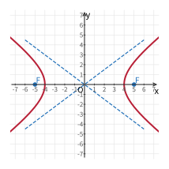
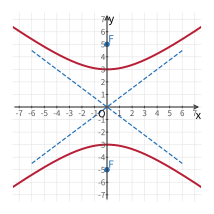
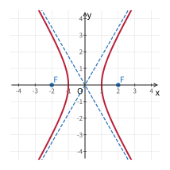

別冊練習問題 2 の解答 双曲線の焦点と漸近線
(1) 双曲線 \(9 x^{2} - 16 y^{2}=144\) の焦点の座標と漸近線の方程式を求めよ。
標準形に直す
両辺を \(144\) でわる。
\[\dfrac{x^2}{16}-\dfrac{y^2}{9}=1\]\(a,\ b\) と焦点
\(x^2\) が正の項なので焦点は \(x\) 軸上。
\[a^2=16,\ b^2=9,\quad c=\sqrt{a^2+b^2}=\sqrt{25}=5\]\[F\,(5,\ 0),\quad F'\,(-5,\ 0)\]漸近線
右辺の \(1\) を \(0\) にして因数分解する。
\[y=\pm\dfrac{3}{4}\,x\]
【答案】
\[\text{焦点 }(5,\ 0),\ (-5,\ 0);\ \text{漸近線 }y=\pm\dfrac{3}{4}\,x\]答
(2) 双曲線 \(- 16 x^{2} + 9 y^{2}=144\) の焦点の座標と漸近線の方程式を求めよ。
標準形に直す
両辺を \(144\) でわる。
\[-\dfrac{x^2}{16}+\dfrac{y^2}{9}=1\]\(a,\ b\) と焦点
\(y^2\) が正の項なので焦点は \(y\) 軸上。
\[a^2=9,\ b^2=16,\quad c=\sqrt{a^2+b^2}=\sqrt{25}=5\]\[F\,(0,\ 5),\quad F'\,(0,\ -5)\]漸近線
右辺の \(1\) を \(0\) にして因数分解する。
\[y=\pm\dfrac{3}{4}\,x\]
【答案】
\[\text{焦点 }(0,\ 5),\ (0,\ -5);\ \text{漸近線 }y=\pm\dfrac{3}{4}\,x\]答
(3) 双曲線 \(3 x^{2} - y^{2}=3\) の焦点の座標と漸近線の方程式を求めよ。
標準形に直す
両辺を \(3\) でわる。
\[x^2-\dfrac{y^2}{3}=1\]\(a,\ b\) と焦点
\(x^2\) が正の項なので焦点は \(x\) 軸上。
\[a^2=1,\ b^2=3,\quad c=\sqrt{a^2+b^2}=\sqrt{4}=2\]\[F\,(2,\ 0),\quad F'\,(-2,\ 0)\]漸近線
右辺の \(1\) を \(0\) にして因数分解する。
\[y=\pm\sqrt{3}\,x\]
【答案】
\[\text{焦点 }(2,\ 0),\ (-2,\ 0);\ \text{漸近線 }y=\pm\sqrt{3}\,x\]答